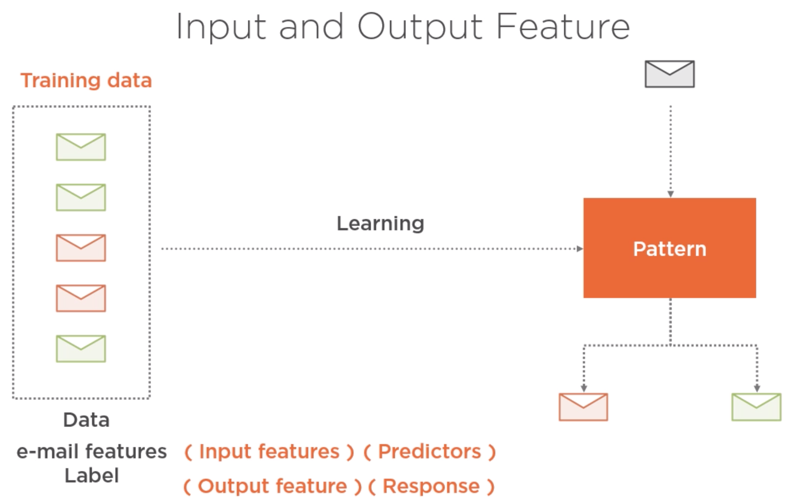
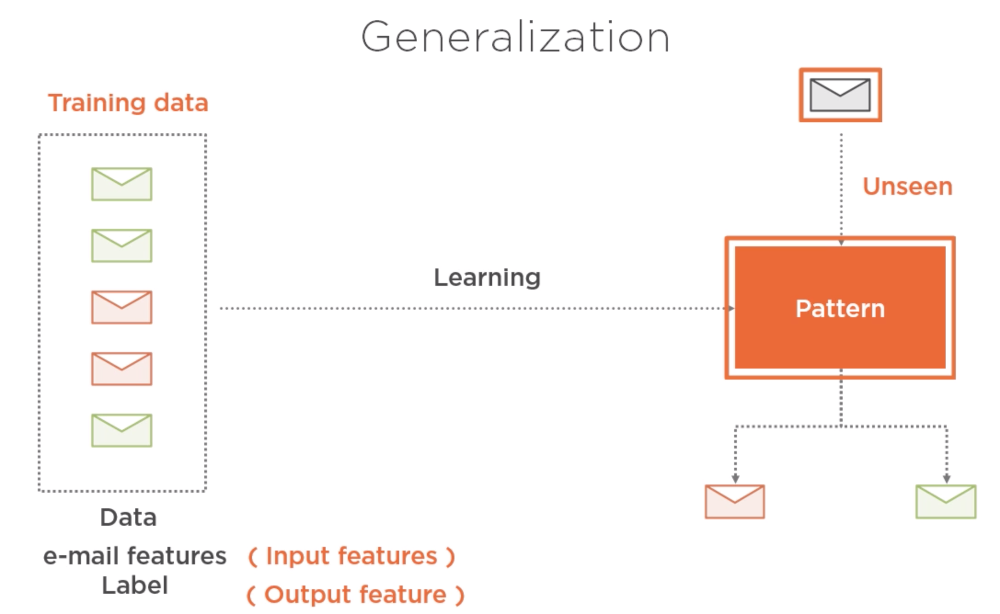
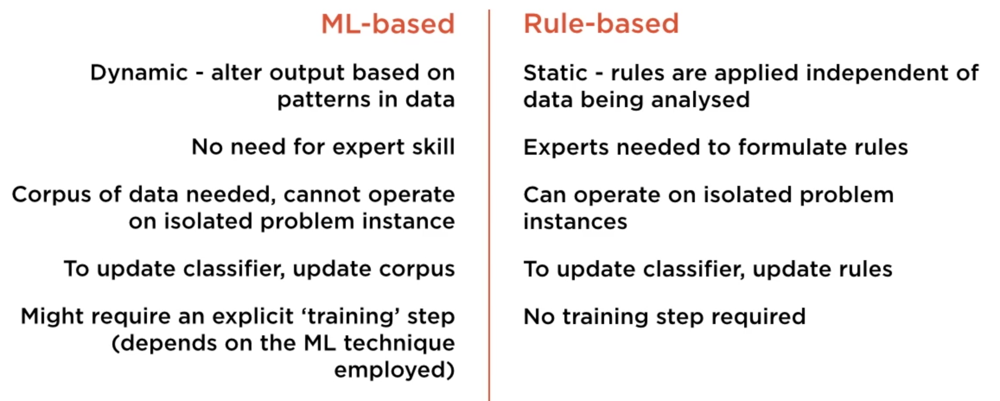

Aprendizaje Automático (Machine Learning)
Contents
Aprendizaje Automático (Machine Learning)¶
¿Qué es aprender?¶
Variables independientes (features) y variable objetivo (response/tag/class)¶

El proceso de “entrenamiento” busca obtener un artefacto que sea capaz de clasificar nuevas observaciones/casos. A mayor cantidad de ejemplos, se espera un mejor desempeño.

{kind=link}
{kind=link}
Aprendizaje no supervisado¶
{kind=link}
Aprendizaje Automático vs Sistemas Basados en Reglas¶
{kind=link}
ML. Pro: adecuado (probablemente la única alternativa) en escenarios con reglas dinámicas y dependiente del contexto. Con: requiere cantidad considerable de datos históricos de buena calidad y la selección de buenos vectores de características (esto requiere experiencia y conocimiento de el funcionamiento de los algoritmos de ML)
Reglas. Pro: adecuado en escenarios con reglas relativamente estáticas o cuando no se dispone de cantidad considerable de datos históricos (en cuyo caso es la única opción). Con: pobre desempeño a la hora de capturar reglas que dependen del contexto, es muchos escencario se requiere de expertos que provean las reglas.
Evaluación del desempeño de un clasificador (binario)¶
{kind=link}
{kind=link}
{kind=link}
Preguntas sobre precisión y exhaustividad¶
Con un clasificador (digamos un test para detectar una enfermedad) de alta exhaustividad, es más o menos probable fallar en la detección de la enfermedad?
Con un clasificador (digamos un test para detectar una enfermedad) de alta exhaustividad, es más o menos probable detectar la enfermedad en personas que no la tienen?
Si la enfermedad es mortal, quá es preferible: alta Presición o alta Exhaustividad?
Modelo - Linea base¶
import pandas as pd
import numpy as np
import os
df_entrenamiento = pd.read_csv(os.path.join("csv", "train.csv"), index_col='PassengerId')
df_entrenamiento.info()
<class 'pandas.core.frame.DataFrame'>
Int64Index: 892 entries, 1 to 1044
Data columns (total 11 columns):
# Column Non-Null Count Dtype
--- ------ -------------- -----
0 Survived 892 non-null int64
1 Pclass 892 non-null int64
2 Name 892 non-null object
3 Sex 892 non-null object
4 Age 715 non-null float64
5 SibSp 892 non-null int64
6 Parch 892 non-null int64
7 Ticket 892 non-null object
8 Fare 891 non-null float64
9 Cabin 204 non-null object
10 Embarked 890 non-null object
dtypes: float64(2), int64(4), object(5)
memory usage: 83.6+ KB
Hacemos limpieza de las columnas que no son necesarias para este ejercicio.
df_entrenamiento = df_entrenamiento.drop(['Ticket', 'Embarked', 'Cabin'], axis=1)
df_entrenamiento.head()
| Survived | Pclass | Name | Sex | Age | SibSp | Parch | Fare | |
|---|---|---|---|---|---|---|---|---|
| PassengerId | ||||||||
| 1 | 0 | 3 | Braund, Mr. Owen Harris | male | 22.0 | 1 | 0 | 7.2500 |
| 2 | 1 | 1 | Cumings, Mrs. John Bradley (Florence Briggs Th... | female | 38.0 | 1 | 0 | 71.2833 |
| 3 | 1 | 3 | Heikkinen, Miss. Laina | female | 26.0 | 0 | 0 | 7.9250 |
| 4 | 1 | 1 | Futrelle, Mrs. Jacques Heath (Lily May Peel) | female | 35.0 | 1 | 0 | 53.1000 |
| 5 | 0 | 3 | Allen, Mr. William Henry | male | 35.0 | 0 | 0 | 8.0500 |
Division Entrenamiento / Test (train - test split)¶
Separar las caracteristicas de la variable de salida
https://pandas.pydata.org/pandas-docs/stable/reference/api/pandas.Series.ravel.html
X = df_entrenamiento.loc[:,'Age':].to_numpy().astype('float') #convertir a una matriz numpy
y = df_entrenamiento['Survived'].ravel() #convertir a un vector numpy
print(X.shape, y.shape)
(892, 4) (892,)
print(type(X), type(y))
<class 'numpy.ndarray'> <class 'numpy.ndarray'>
from sklearn.model_selection import train_test_split
X_train, X_test, y_train, y_test = train_test_split(X, y, test_size=0.2, random_state=0)
print(X_train.shape, y_train.shape)
print(X_test.shape, y_test.shape)
---------------------------------------------------------------------------
ModuleNotFoundError Traceback (most recent call last)
Input In [9], in <module>
----> 1 from sklearn.model_selection import train_test_split
3 X_train, X_test, y_train, y_test = train_test_split(X, y, test_size=0.2, random_state=0)
4 print(X_train.shape, y_train.shape)
ModuleNotFoundError: No module named 'sklearn'
Ver si no se trata de un problema con clases muy “desbalanceadas”
print('media de supervivencia en el conjunto de entrenamiento : {0:.3f}'.format(np.mean(y_train)))
print('media de supervivencia en el conjunto de prueba : {0:.3f}'.format(np.mean(y_test)))
media de supervivencia en el conjunto de entrenamiento : 0.381
media de supervivencia en el conjunto de prueba : 0.391
Clasificador linea base¶
importar el algoritmo de clasificación
from sklearn.dummy import DummyClassifier
Crear el clasificador
clasificador_lineabase = DummyClassifier(strategy='most_frequent', random_state=0)
“entrenar” el clasificador
clasificador_lineabase.fit(X_train, y_train)
DummyClassifier(random_state=0, strategy='most_frequent')
El método score devuelve Accuracy (exactitud) del clasificador linea base
Accuracy obtenido sólo con devolver la clasificación con mayor frecuencia
Se debe superar este valor empleando Machine Learning.
print('accuracy del clasificador : {0:.2f}'.format(clasificador_lineabase.score(X_test, y_test)))
accuracy del clasificador : 0.61
from sklearn.metrics import accuracy_score, confusion_matrix, precision_score, recall_score, f1_score
La función compara las clasificaciones conocidas (del conjunto de prueba) con las predicciones hechas por el clasificador para los ejemplos del conjunto de prueba
print('accuracy del clasificador : {0:.2f}'.format(accuracy_score(y_test, clasificador_lineabase.predict(X_test))))
accuracy del clasificador : 0.61
Matriz de confusión
print('matriz de confusión del clasificador: \n {0}'.format(confusion_matrix(y_test, clasificador_lineabase.predict(X_test))))
matriz de confusión del clasificador:
[[109 0]
[ 70 0]]
# precision y recall
print('precision del clasificador : {0:.2f}'.format(precision_score(y_test, clasificador_lineabase.predict(X_test))))
print('recall del clasificador : {0:.2f}'.format(recall_score(y_test, clasificador_lineabase.predict(X_test))))
precision del clasificador : 0.00
recall del clasificador : 0.00
/usr/local/lib/python3.9/site-packages/sklearn/metrics/_classification.py:1248: UndefinedMetricWarning: Precision is ill-defined and being set to 0.0 due to no predicted samples. Use `zero_division` parameter to control this behavior.
_warn_prf(average, modifier, msg_start, len(result))